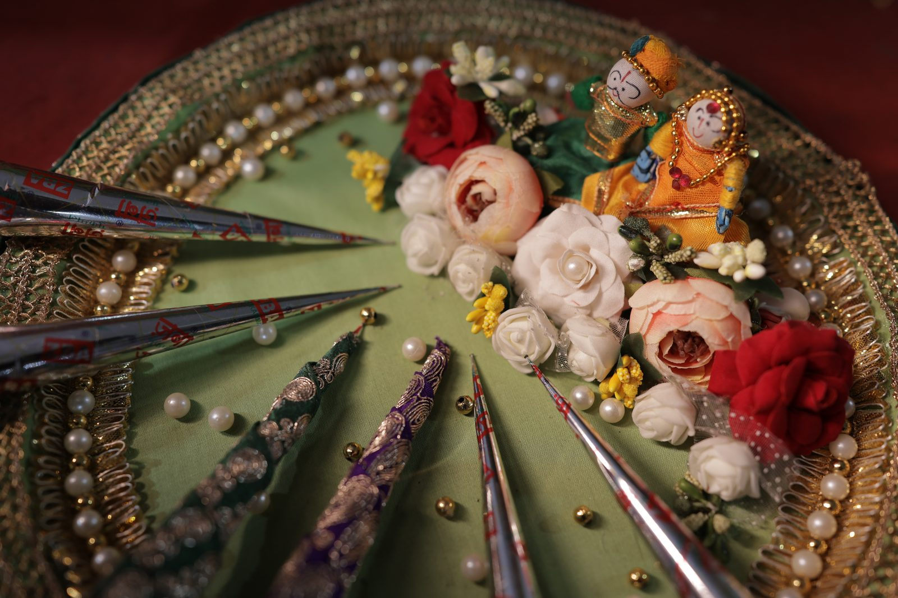
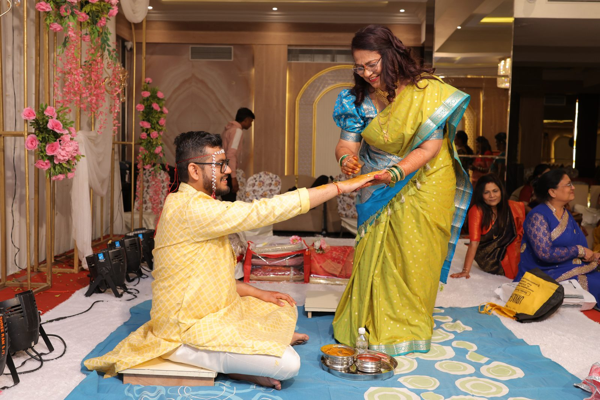
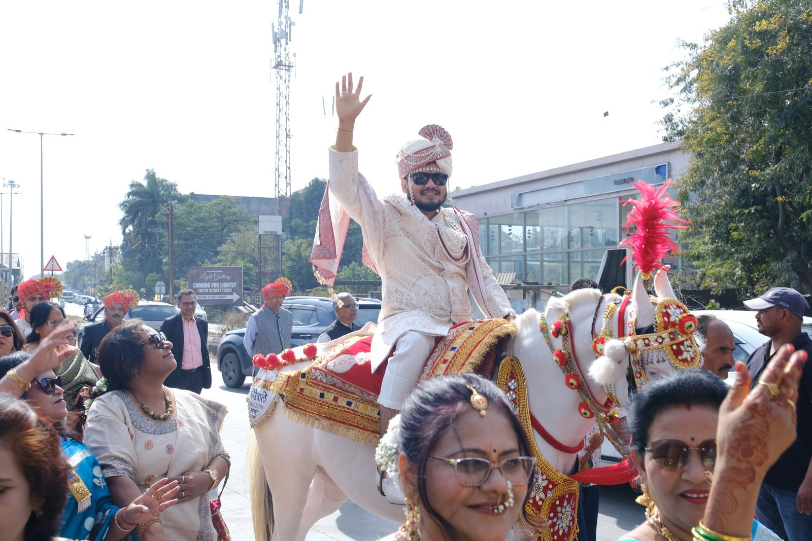
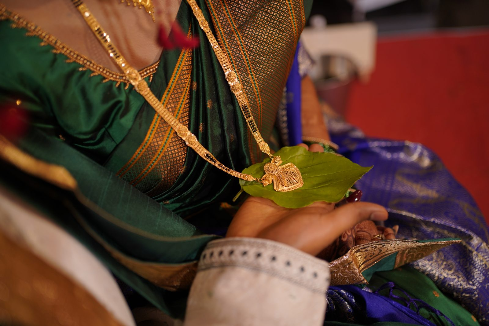

Mehendi
Intricate henna is drawn across the bride's hands and feet as the family sings late into the evening. Tradition holds that the darker the stain, the deeper the love to come.
शुभ विवाह
सुयश & स्नेहा
उत्सव

Intricate henna is drawn across the bride's hands and feet as the family sings late into the evening. Tradition holds that the darker the stain, the deeper the love to come.

A radiant morning ritual where turmeric paste is smoothed over the bride and groom — a blessing for glowing skin, good fortune, and protection in the days ahead.

The groom's joyous arrival — dhol drums, dancing cousins, and a procession that turns the whole street into a celebration on the way to the mandap.

Beneath the flower-laden mandap, the couple circles the sacred fire and exchanges seven vows — the sacred, beating heart of the wedding.
An evening of feasting, music, and laughter as Suyash and Sneha are welcomed for the very first time as husband and wife.
यादें
The Full Story